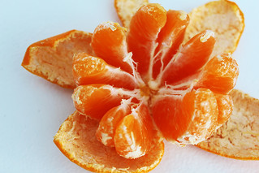
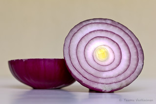
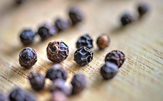
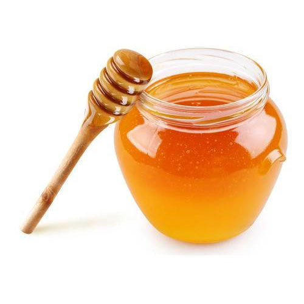

FOOD TO CONSUME
1.Coconut water 2.Fluids like soda water fresh juices 3.Peeled fruits  4.Onions  5.Blackpepper  6.Sour fruits(lemon,orange) 7.Honey 
HOME REMEDIES
1.Drink boiled water 2.Lemon juice 3.Hygenic environment 4.Apply ice bag over stomach
FOOD TO AVOID
1.Unpeeled fruits and vegetables 2.Unpasteurized milk and milk products 3.Raw or undercooked meat or shellfish 4.Fish caught in tropical reefs, which may be contaminated
Reference Link Prev